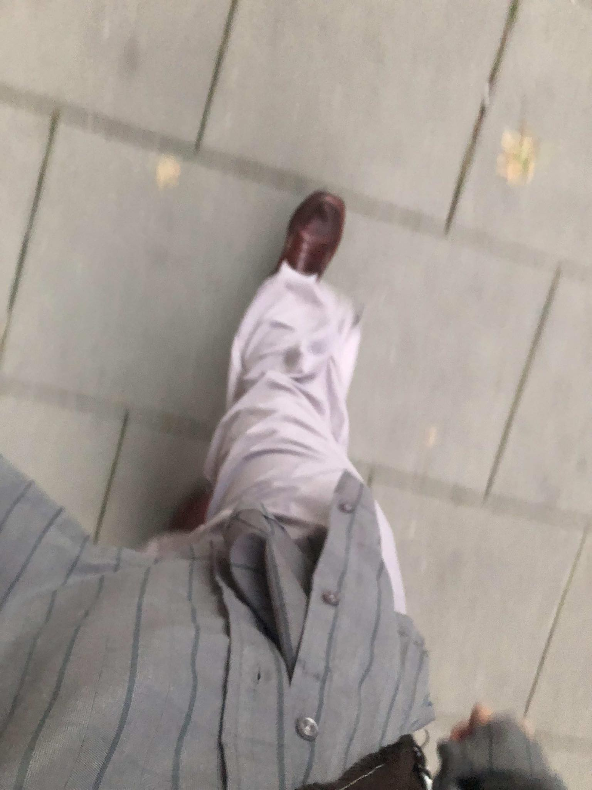

Wiem, że nie jestem w tym jedyna. W Tobie też jest ta niezrozumiała fascynacja brudem i obrzydliwością. Ty też patrzysz na zepsuty owoc nadzwyczaj długo zanim go wyrzucisz, Ty też lubisz słuchać o brutalnych śmierciach, kiedy nie możesz zasnąć, choć nie lubisz tego przyznawać. W sumie lubisz te wszystkie małe potworności. Lubisz je oswajać, oglądać z daleka, trzymać w bezpiecznej klatce, podziwiać w zoo. Lubisz je, kiedy nie są częścią Ciebie. Lubisz tę iluzję, że mimo wszystko masz to pod kontrolą.
Tak dobrze nam to idzie. Trzymanie naszej natury w klatce jak zwierzątka i zaglądanie do niego raz na jakiś czas. Nadaliśmy sens temu co obrzydliwe, oprawiliśmy w ramkę i wystawiliśmy w muzeum. To już nie jest część Ciebie ani część mnie i możemy spać spokojnie. Dzisiaj poodkurzasz, zrobisz pranie i wsadzisz każdy słoik do zamrażarki, żeby zabić wszystko co może w nim być. A kiedy to będzie za dużo to uciekniesz, nie zdając sobie sprawy z tego, że Twoje ciało ucieka razem z Tobą i razem z obrzydzeniem, które odczuwasz do jego fizjologicznych funkcji. Przyobleczesz je w tragedię grecką i największy sweter jaki znajdziesz w sklepie z używaną odzieżą, żeby tylko nie popatrzeć mi w oczy, żeby nikt nie zobaczył płynów Twojego organizmu. Ubierzesz je w piękne słowa, żeby nie raziły trywialnością swojego istnienia, żeby tylko nie musieć mierzyć się z bezsensownością obrzydliwości. Żeby nikt nie zauważył.
